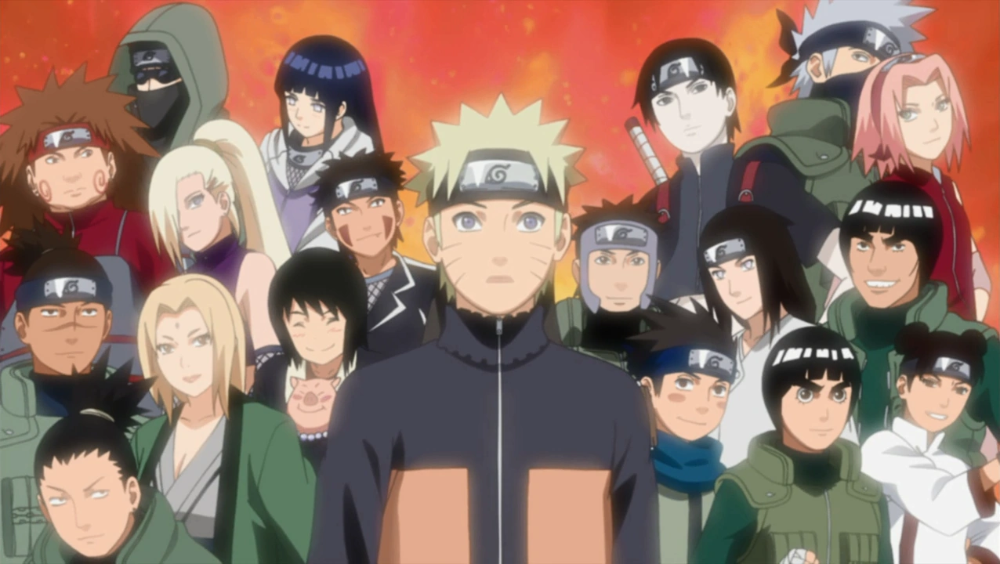

About Naruto
Naruto is generally a very simple minded, easy going, cheerful person. He often rushes things, and misses obvious things such as Hinata's constant shyness around him.As Naruto was born, his home village of Konoha came under attack by a nine-tailed fox demon which was sealed in him at infancy to protect the people of the village. Due to this fact he became distrusted and resented by the people around him during his childhood. He, however, aspires to become the Hokage; a title given to the leader of Hidden Leaf Village, and as the most poorly performing student in his ninja school, he strives to prove his worth to his peers and fellow villagers. He is known for his often-used catchphrase "Dattebayo", and is connected to most other characters around him by either friendship or rivalry. At the end of the series, Naruto marries Hinata Hyuga, and has two children, daughter Himawari and son Boruto. He also becomes the Seventh Hokage, finally fulfilling his dream.
Naruto and his Friends.
Naruto's Characteristics
- He is kind.
- Loves Ramen.
- Is Friends With The Demon Inside Of Him.
- Has Great teachers like Master Jiraya.
- Has a Catchphrase: Dattebayo.
- Has a Dream.
Naruto's Friends
Naruto has some great friends. I think his Best Friend is Sasuke Uchiha, who is very powerful.